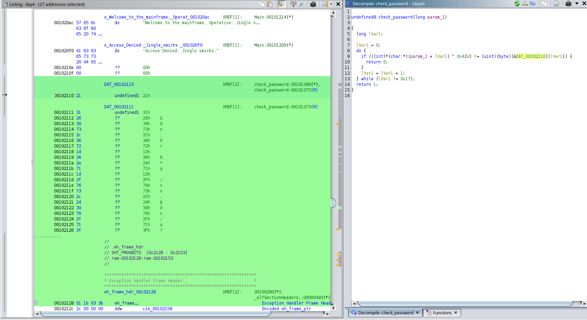

Day 4 The Elf's Wager¶
category : reverse engineering
Description¶
The break room buzzes with energy when you walk in. A crowd of elves has gathered around Jingle McSnark's desk, where a holographic scoreboard floats above a plate of half-eaten gingerbread.
"Ah, the human!" Jingle spins around, candy cane tucked behind one pointed ear. "Perfect timing. We were just discussing how long it would take you to fail today's challenge."
He gestures dramatically at his terminal, where green text scrolls across a black screen.
"Every week, I post a little puzzle for the SOC team. Keeps us sharp, you know? Last week, Snowdrift over there" he points at a sheepish-looking elf "took three days to crack my binary. THREE. DAYS."
Snowdrift mutters something about "unfair obfuscation" into his hot cocoa.
"But you," Jingle continues, leaning forward with a grin that's equal parts challenge and condescension, "you're supposed to be some kind of specialist, right? Santa's new secret weapon against the Krampus Syndicate?"
He slides a USB drive across the desk. It's shaped like a tiny Christmas tree.
"Prove it. My mainframe authentication module. Figure out what gets you in. No debuggers and I've made sure of that. Static analysis only, human."
The elves exchange glances. Someone starts a betting pool on a napkin.
"Oh, and one more thing," Jingle adds, spinning back to his monitors. "The Syndicate's been probing our mainframe access systems all week. If you can't figure out how authentication works at the North Pole... well, let's hope they can't either."
The room falls silent, waiting.
Attachments¶
Hint :
- .Jingle peers over your shoulder and sighs. "You know, some gifts come wrapped. You just need the right touch to unwrap them. XOR-dinary, really."
- .A sticky note appears on your monitor, written in Snowdrift's handwriting:
gifts[] ^ 0x42 = ?
- S
The binary is a 64-bit Linux ELF file that requests access code. Debugging is not allowed, so the analysis is performed statically.
Our goal is to discover the input validation logic and derive the correct access code.


Verification Function Analysis¶
The verification function (check_password) has the following logic (decompiled):
for (i =0; i <23; i++) {
if ((input[i] ^0x42) != table[i])
return0;
}
return1;
This means:
- Each input character is XORed with
0x42. - The result is compared against a static byte table in
.rodata. - If all 23 bytes match, access is granted.
Analyzing .rodata¶
Comparative table found in section .rodata:
21 31 26 39 73 2c 36 72 1d 36 2a
71 1d 2f 76 73 2c 24 30 76 2f 71 3f
Solver
data = bytes.fromhex(
"21 31 26 39 73 2c 36 72 1d 36 2a "
"71 1d 2f 76 73 2c 24 30 76 2f 71 3f"
)
print(bytes(b ^ 0x42 for b in data).decode())